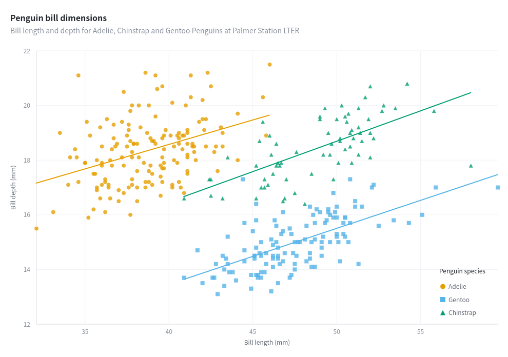
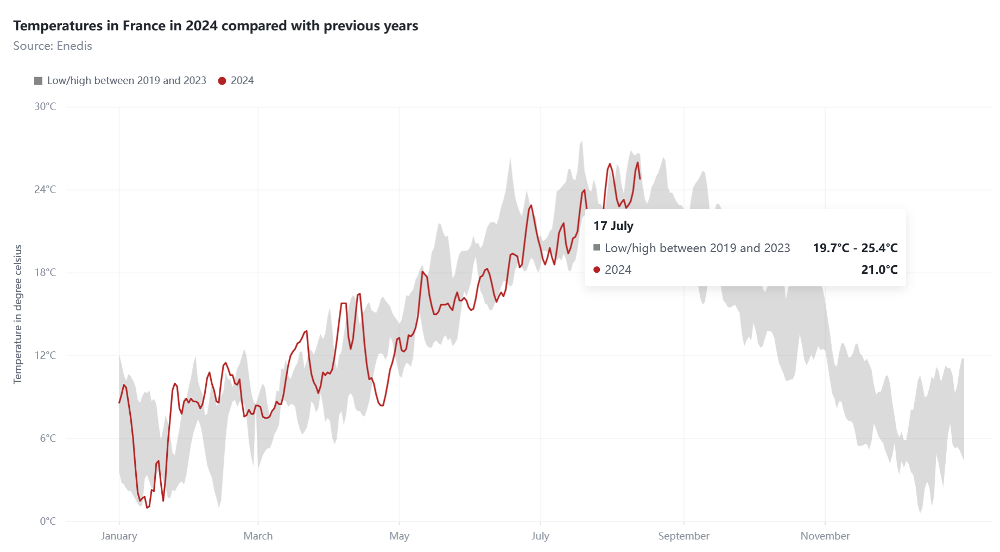

R Htmlwidget for VChart : VChart is a charting component library in VisActor visualization system. See the online documentation for examples.
Installation
You can install the development version of vchartr from GitHub with:
# install.packages("remotes")
remotes::install_github("dreamRs/vchartr")Examples
A scatter plot with palmerpenguins dataset and inspired from the documentation:

library(vchartr)
library(palmerpenguins)
vchart(penguins) %>%
v_scatter(
aes(
x = bill_length_mm,
y = bill_depth_mm,
color = species,
shape = species
)
) %>%
v_smooth(
aes(
x = bill_length_mm,
y = bill_depth_mm,
color = species
),
method = "lm",
se = FALSE
) %>%
v_scale_x_continuous(
name = "Bill length (mm)"
) %>%
v_scale_y_continuous(
name = "Bill depth (mm)"
) %>%
v_labs(
title = "Penguin bill dimensions",
subtitle = "Bill length and depth for Adelie, Chinstrap and Gentoo Penguins at Palmer Station LTER"
) %>%
v_specs_legend(
orient = "top",
position = "start",
layout = "vertical",
layoutType = "absolute",
right = 0,
bottom = 40,
title = list(
visible = TRUE,
text = "Penguin species"
)
)A line chart with area range:

vchart(temperatures, aes(date)) %>%
v_area(
aes(ymin = low, ymax = high),
area = list(style = list(fill = "#848585", fillOpacity = 0.3)),
name = "Low/high between 2019 and 2023"
) %>%
v_line(
aes(y = `2024`),
line = list(style = list(stroke = "firebrick")),
) %>%
v_scale_x_date(
date_breaks = "2 months",
date_labels = "MMMM",
date_labels_tooltip = "DD MMMM"
) %>%
v_scale_y_continuous(
name = "Temperature in degree celsius",
labels = format_num_d3(".0f", suffix = "°C"),
labels_tooltip = format_num_d3(".3r", suffix = "°C")
) %>%
v_labs(
title = "Temperatures in France in 2024 compared with previous years",
subtitle = "Source: Enedis"
) %>%
v_specs_legend(
visible = TRUE,
orient = "top",
position = "left"
)Development
This package use {packer} to manage JavaScript assets, see packer’s documentation for more.
Install nodes modules with:
packer::npm_install()Modify srcjs/widgets/vchart.js, then run:
packer::bundle()Re-install R package and try vchart() function.